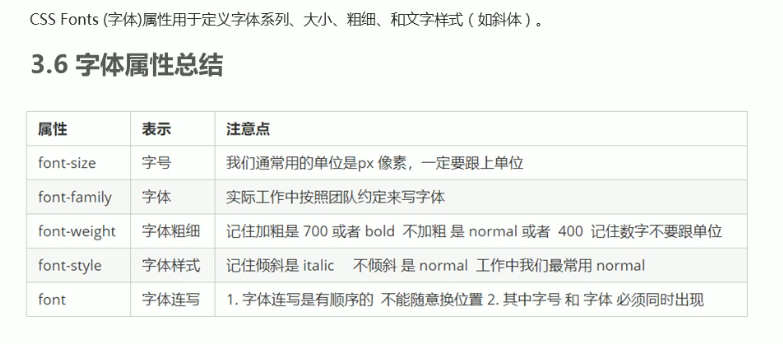

我该用怎样的方式，想念那一段所谓的地久天长。除掉睡眠， 人的一辈子只有一万多天。人与人的不同在于： 你是真的活了一万多天，还是仅仅生活了一天，却重复了一万多次。 一个人至少拥有一个梦想，有一个理由去坚强。心若没有栖息的地方，到哪里都是在流浪。 爱你越久我越被动 只因你的爱居无定所 是你让我的心慢慢退缩 退到你看不见的角落
CSS字体样式就是用来定义网页中文本的字体类型，粗细，大小等样式。 常见如下图所示：

在style元素里使用@font-face属性：
@font-face{
font-family:"字体类型名1";
url("路径");项目font文件夹下不同格式的字体文件,
url("路径");项目font文件夹下不同格式的字体文件;
}
@font-face{
font-family:"字体类型名2";
url("路径");项目font文件夹下的不同格式字体文件,
url("路径");项目font文件夹下的不同格式字体文件;
}
字体文件格式：因为不是所有的浏览器的都支持，所以要定义多种格式好兼容多种浏览器。
然后在想要设置网络字体的选择器中使用font-family属性即可
语法：font-family:字体类型名1;
字体可以设置成各种形状，当然也可以设置成图标的形状也就是字体图标了。 它与图片不一样在于字体图标可以设置大小颜色等。 本质上还是网络字体的应用，不过帮定义好了font-family，只需要在元素上定义类名即可使用。 阿里巴巴矢量图标库：https://www.iconfont.cn/，不用自己这样引入了。 添加类iconfont 字体图标名即可显示(实际是作为伪元素的内容来显示的)。